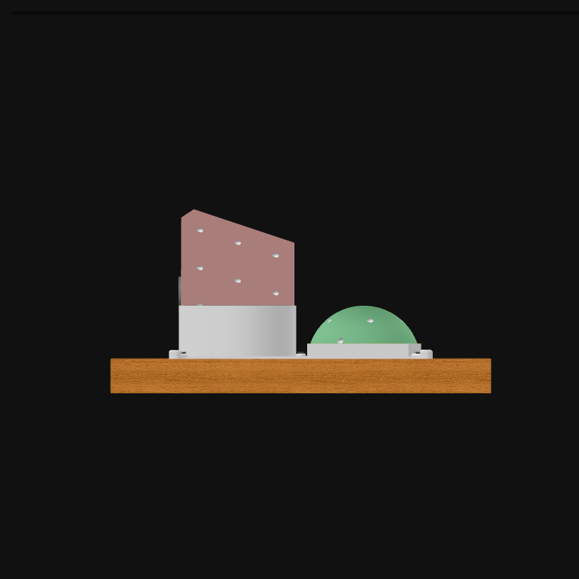
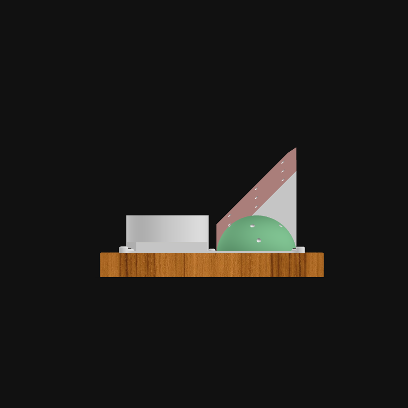
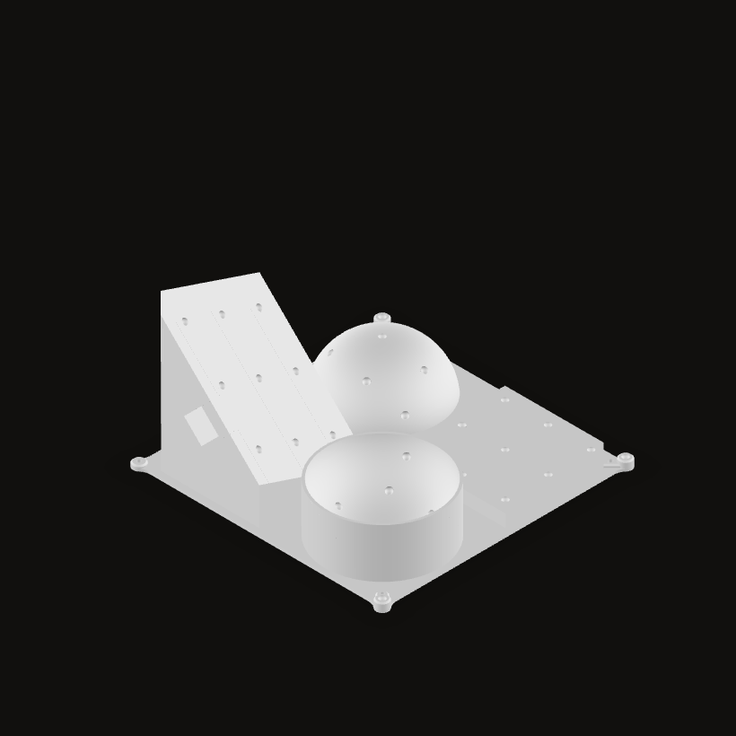

A measuring artifact for point picking accuracy
One published work, entirely real: the metrological methodology of Computers in Industry 2026 and the 3D printed artifact the tooltip is positioned on during the point picking measurements.
-
Metrological methodology
A measuring artifact for point picking accuracy
A metrological methodology to measure how accurately an Augmented Reality system tracks the tip of a surgical tool, with a dedicated 3D printed artifact the tooltip is positioned on during the point picking measurements.
3D preview, loadingPlanar horizontal divots2.5 mm radiusTilted plane divots2.5 mm radiusConvex surface2.5 mm radiusConcave surface2.5 mm radiusWooden boardThe support planeWood screwsFive, into the boardMarker adapterSets the marker to preset rotationsParts


The 3D printed measuring artifact of the methodology, the instrument the tooltip is positioned on during the point picking measurements.
A tracking error propagates to every point picked with the tool, and aligning the collected points to their theoretical pattern hides the absolute part of it. No repeatable procedure existed to compare one tracking method with another; this is that procedure, in the four stages of the paper.
01
Initialization
The artifact is printed and the tracked tool is chosen or built. Its 36 divots are hemispherical, 2.5 mm in radius, so a tool with a tip of the same radius sits in one and pivots. A slot in the middle houses the auxiliary reference system the captured points will be referred to.
What the stage produces
- 200 mmsquare base
- 36hemispherical divots
- 2.5 mmdivot and tip radius
- 45°steepest wall, for extrusion printing
The artifact is the model beside these phases, printed by material extrusion, no wall over 45 degrees from the vertical. Pick a surface to light it there.
02
Qualification
Both ends of the comparison are measured before anything else. The cameras are calibrated, then the artifact is scanned as built, since a printed part deviates from its CAD: the real divot centres are found on a coordinate measuring system. The tool gives up its tooltip offset the same way, by measurement or by pivoting calibration.
The two things that are qualified
- The artifact
- 36 divot centres measured on a coordinate measuring system, each divot fitted as a Gaussian sphere, expressed in the frame Q of that instrument.
- The tool
- the tooltip offset, the position of the tip in the marker frame M, from the measured geometry of the tool or from pivoting calibration.
Section 3.2. In this work the coordinate measuring system was an optical ATOS ScanBox 4105 with GOM Inspect Pro, each divot fitted as a Gaussian sphere.
03
Experiment
One designed experiment, not one run. Four factors are crossed, surface geometry, artifact rotation, tool to device distance and operator, for 48 treatments, with the nine points of each geometry nested inside. In every treatment the tip is rested in the 36 divots in turn and the system reports where it thinks the tip is.
What is actually measured
(8)p is the tracked point, reported in the device frame; q the qualified one, measured in the frame of the instrument. Both are carried into the local frame L of the artifact first, which is the block below. Once they share a frame the measurement is a subtraction: three signed errors, one per axis, written here for x and identical for y and z. These are the response variables of the design; the paper also uses their Euclidean distance.
Equations 6 to 9, factors and levels from Fig. 8a. Rotation has two levels, 0 and 180 degrees, marked on the artifact itself.
04
Evaluation
A generalized linear model says which factors matter, terms selected stepwise at 15 percent. Then the characteristics: accuracy is the mean error, precision is its reproducibility, and the uncertainty adds to them the calibration of the artifact and the resolution of the device. What comes out is an expanded uncertainty at 95 percent, which is what makes two tracking systems comparable.
Accuracy, precision, and the uncertainty around them
(10)(11)(14)Accuracy is the mean error and reproducibility its standard deviation, written for x and holding for the other axes: n repetitions, ē the mean error, s its standard deviation. The combined standard uncertainty u adds those two to the calibration of the artifact and to the resolution of the device, in quadrature, following the PUMA model; the last line expands it to a 95 percent confidence level through the Student t quantile at ν degrees of freedom.
Equations 10, 11 and 14 of the paper. The variance budget behind u, equations 12 and 13, is in the PDF.
How the points are taken
First the three reference points of the auxiliary system, L1, L2 and L3, which build the local frame every later point is referred to. Then the 36 divots, one after the other, surface by surface, the same sequence in every treatment. Each dot is a real feature of the model, found in the mesh itself; the camera follows the surface being picked.
3D preview, loadingL1L2L3xLyLzL123456789101112131415161718192021222324252627282930313233343536L1L1, the origin
The three reference points come first because the published processing script builds the frame from the first three points of every file. The ranges 1 to 9, 10 to 18, 19 to 27 and 28 to 36 are the point picking sequence of Fig. 8b; the order inside one surface is read row by row, which the figure does not spell out. L1, L2 and L3 are the three slots of the auxiliary system, taken at their real coordinates in the mesh: only three of the four corners of the base carry one, and the naming is the one of Fig. 8b, so x and y run along the two edges that join them and z comes out of the base.
Aligning the captured points
The two clouds never start in the same place. Three reference points in the auxiliary slot build the local frame: L1 is the origin, L2 gives the first axis, L3 fixes the plane. Tracked and qualified points are both carried into it, and only then is what is left between a point and its twin a measurement.
- Null initial coarse registration
- ICP alignment
- Optimal alignment
The pattern is the real one: the 36 divot centres of this model, carried into the local frame with the procedure of the script published in the Mendeley dataset linked above. What is schematic is the pose the captured cloud starts from, a real misalignment being far too small to see at this scale. The transformation that carries a point into the local frame
The three points give the rotation R and, with the origin L1, the transformation T. Equation 5 is its inverse, the one that brings a tracked point into the local frame; the same reasoning gives the transformation from the instrument frame.